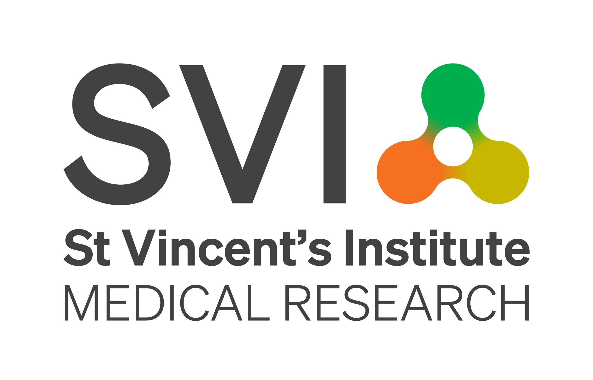
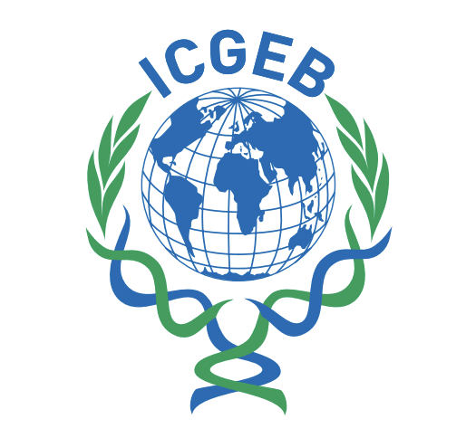
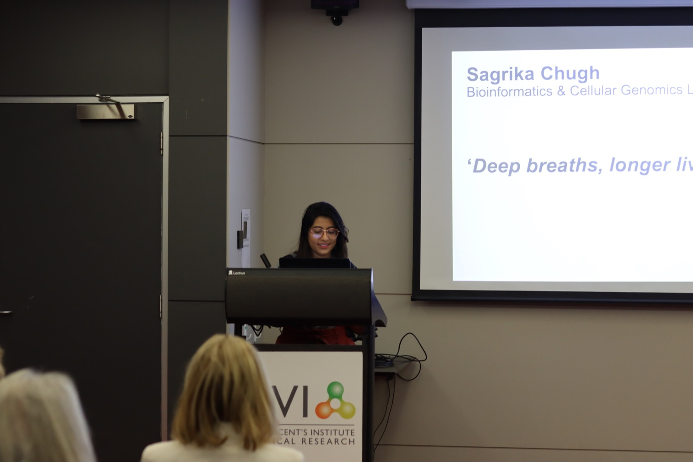
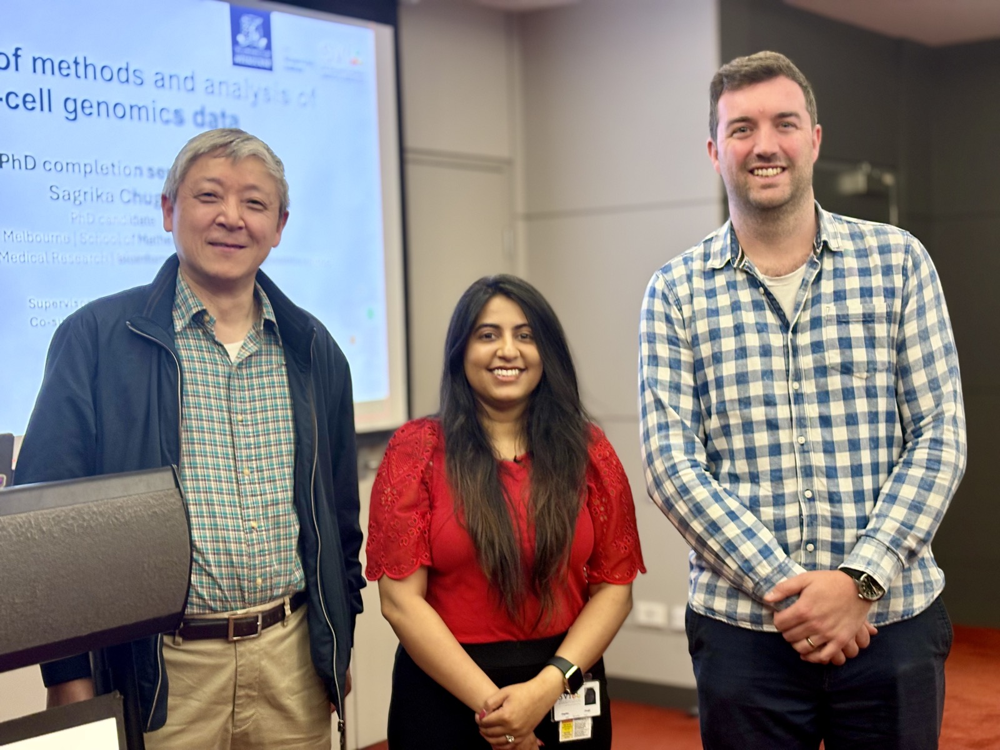
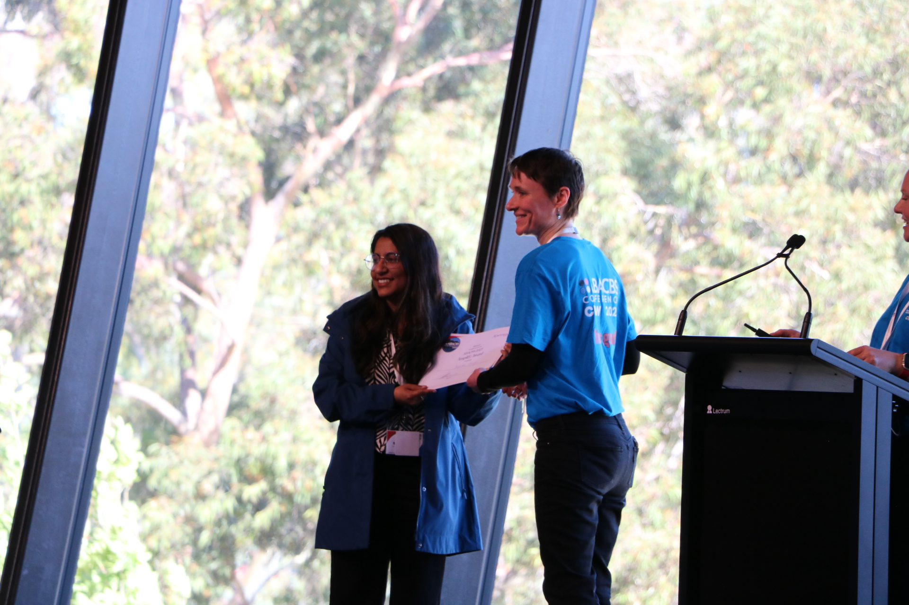

Data Analysis & Insights
From complex data to practical interpretation
Statistical analysis, complex data integration, trend identification, quality checks and evidence-based recommendations.
Data, Insights & Research Professional
I am a PhD-trained data and insights professional with more than five years of experience across research, analytics and evidence generation. I turn complex datasets into clear, actionable insights that support decision-making, evaluation, reporting and strategic planning.
Currently, I work across biomedical research and data-intensive analytical projects at the University of Melbourne and St Vincent's Institute of Medical Research, applying quantitative methods, reproducible workflows and stakeholder-focused reporting to real-world challenges.
I’m a PhD-trained analyst and research professional with experience spanning quantitative analysis, evidence generation, stakeholder communication and research translation.
My work focuses on transforming complex datasets into actionable insights that support understanding, evaluation and decision-making. Across research, analytics and collaborative projects, I have developed expertise in statistical analysis, reporting, reproducible workflows and communicating evidence to technical and non-technical audiences.
Over time, my interests have expanded beyond technical analysis into evaluation, accessibility, stakeholder engagement and evidence-informed decision support. I am particularly drawn to environments where problems are complex, evidence is nuanced and effective communication is as important as analytical rigour.
Data Analysis & Insights
Statistical analysis, complex data integration, trend identification, quality checks and evidence-based recommendations.
Evaluation & Reporting
Reporting frameworks, cohort summaries, monitoring and evaluation support, interpretation notes and stakeholder-ready outputs.
Research Translation
Presentations, briefings and visual summaries that communicate methods, uncertainty, findings and implications.
Inclusion & Accessibility
Accessibility initiatives, inclusive conference planning, participation support and equity-minded analytical thinking.

St Vincent's Institute of Medical Research & University of Melbourne
University of Melbourne
School of Mathematics and Statistics, University of Melbourne

International Centre for Genetic Engineering and Biotechnology, New Delhi




A compact selection of public work and privacy-safe examples that show how I build reproducible analysis, usable tools and clear research communication.
Open-source software
Open-source R package for synthetic single-cell ATAC-seq data.
Research evidence
Contribution to a 142-donor Nature Genetics study of disease-relevant expression patterns.
Interactive research explorer
Privacy-safe mock-up of a ShinyCell2-style interface for UMAP-style views, feature selection and metadata controls.
Research communication
Research summaries and written outputs for technical and multidisciplinary audiences.